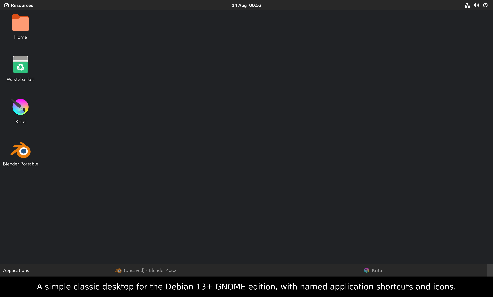

Classic open-source GNOME* desktop extension with native portable apps and AppImage support for Debian* 13+ and Ubuntu* 24.04/26.04+

Debian 13+ · Ubuntu 24.04/26.04+
Add the signed Open Research Tools repository and install Gnozzard with one command.
wget -qO /tmp/openresearchtools-archive-keyring.deb https://apt.openresearchtools.com/apt/releases/download/repo/openresearchtools-archive-keyring.deb && sudo apt install -y /tmp/openresearchtools-archive-keyring.deb && sudo apt update && sudo apt install -y gnozzard
If another Open Research Tools package has already added the repository:
sudo apt install gnozzard
APT automatically chooses the amd64 or arm64 package for this system. Log out and back in after installation.
Last updated 14 August 2026
At gnozzard.com, your privacy is respected. This site does not collect personal data or use tracking technologies.
This website is hosted using GitHub Pages. GitHub may process limited technical information, such as an IP address and basic request data, to operate the service securely and reliably. See the GitHub Privacy Statement.
External websites have their own privacy practices. Under UK GDPR, you have rights relating to your personal data. Because this site does not collect personal data, there is no visitor information for us to provide or erase.